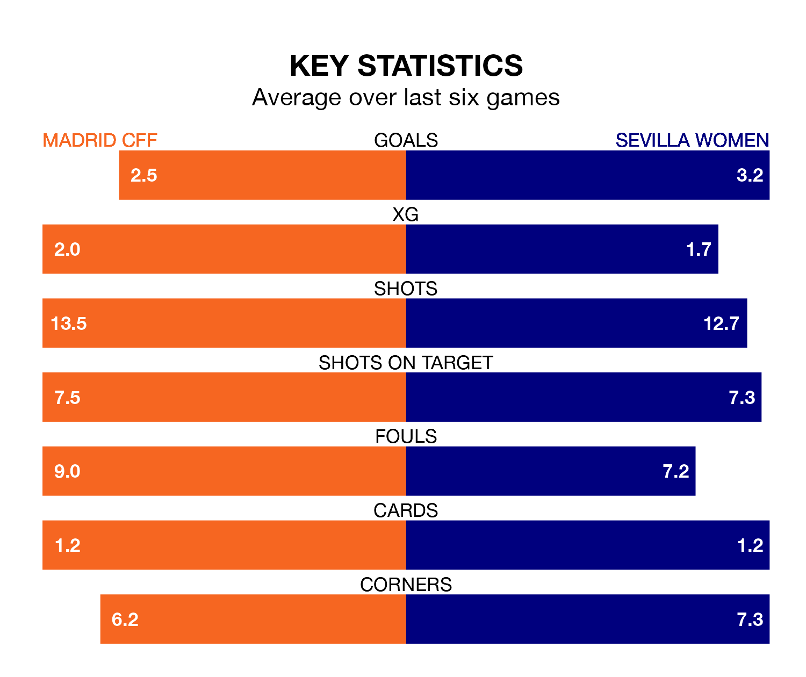

Saturday lunchtime's match between Madrid CFF and Sevilla Women promises to be one for the neutrals, as two of Primera Division Women's most free-scoring sides go head-to-head.
Ahead of the game at the Estadio Fernando Torres, Madrid CFF and Sevilla sit second and fourth in the goal-scoring charts, with 36 and 32 goals respectively.
Striker Racheal Kundanaji leads the way for the home side, having bagged eight goals in their 15 games to date.
And Cristina Martín-Prieto Gutierrez has been the main man in the opponents' penalty box for Sevilla, with 10 goals.
Madrid CFF are in good form in Primera Division Women, with four wins and a draw from their last six games.
With five wins and a draw over that period, Sevilla's form is better – they have taken 16 points from 18, compared to the home team's 13.
In the last 10 years, Madrid CFF and Sevilla have played each other on 12 occasions. Madrid CFF won three of them, Sevilla seven, and they drew twice.
On average, Madrid CFF scored 1.1 goals and Sevilla 1.6 in those matches.
Their last meeting was on September 30, when Madrid CFF won 5-1 away.
Madrid CFF are fourth in the table after 15 games, of which they have won 10 and drawn one, earning 31 points.
The visitors are two places behind Madrid CFF in sixth, with nine wins and one draw putting them on 28 points.
Madrid CFF's last match was on Sunday, a 1-1 draw against Real Sociedad Women, with Young-Ju Lee getting the goal for Madrid CFF.
Sevilla beat Eibar Women 3-0 last time out, also on Sunday, with Martín-Prieto Gutierrez (two) and Cinthia Pamela González Medina on the scoresheet.
Updated: 14:12 (UTC), 02/02/24